News
2026-01-26: SuperInfer has been accepted at MLSys 2026 ! 🎉
Large Language Model (LLM) serving faces a fundamental tension between stringent latency Service Level Objectives (SLOs) and limited GPU memory capacity. When high request rates exhaust the KV cache budget, existing LLM inference systems often suffer severe head-of-line (HOL) blocking. While prior work explored PCIe-based offloading, these approaches cannot sustain responsiveness under high request rates, often failing to meet tight Time-To-First-Token (TTFT) and Time-Between-Tokens (TBT) SLOs.
To address these issues, we present SuperInfer, a high-performance LLM inference system designed for emerging Superchips (e.g., NVIDIA GH200) with tightly coupled GPU-CPU architecture via NVLink-C2C. SuperInfer introduces (1) RotaSched, the first proactive, SLO-aware rotary scheduler that rotates requests to maintain responsiveness on Superchips, (2) DuplexKV, an optimized rotation engine that enables full-duplex transfer over NVLink-C2C.
Evaluations on GH200 using various models and datasets show that SuperInfer improves TTFT SLO attainment rates by up to 74.7% while maintaining comparable TBT and throughput compared to state-of-the-art systems, demonstrating that SLO-aware scheduling and memory co-design unlocks the full potential of Superchips for responsive LLM serving.
The Memory Wall: During autoregressive generation, each request maintains a growing KV cache that quickly exhausts GPU memory under high loads, leading to SLO violations.
The Interconnect Bottleneck: Existing KV offloading systems are crippled by slow PCIe bandwidth (~32-64 GB/s), causing severe head-of-line (HOL) blocking and SLO violations.
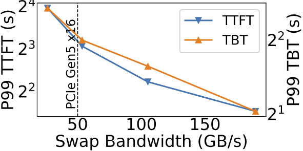
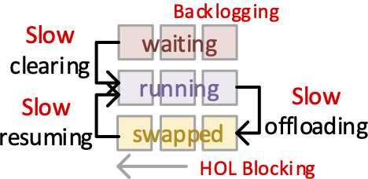
Superchip Opportunity: Emerging tightly-coupled CPU-GPU Superchips provides highspeed CPU-GPU interconnects to break the PCIe bottleneck. As an example, NVIDIA GH200 integrates a Hopper GPU and a Grace CPU via NVLink-C2C with 900 GB/s interconnection bandwidth.
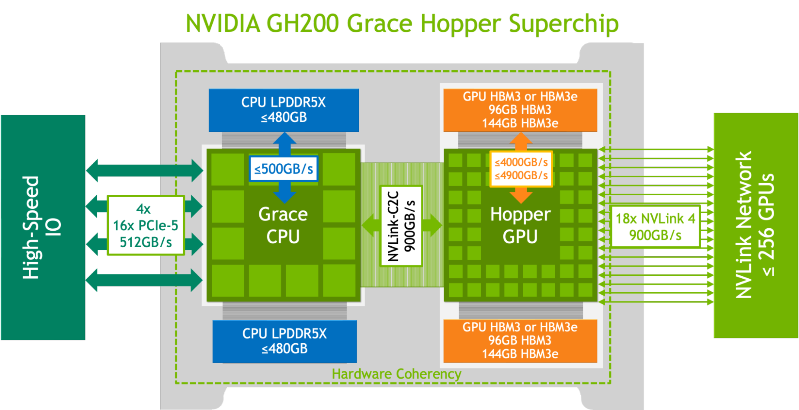
Software Bottlenecks: Existing serving stacks fall short on two fronts:
React to memory pressure, not latency urgency. Static Waiting-First / Swapped-First policies bias one SLO (TTFT or TBT) at the expense of the other.
Exploit < 5% of NVLink-C2C bandwidth — PagedAttention fragments KV cache into tiny pieces.
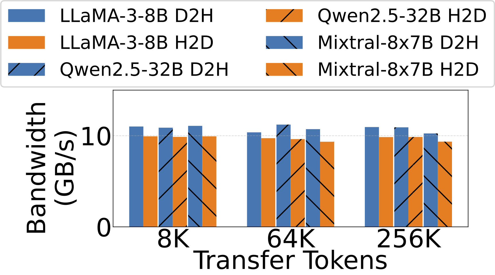
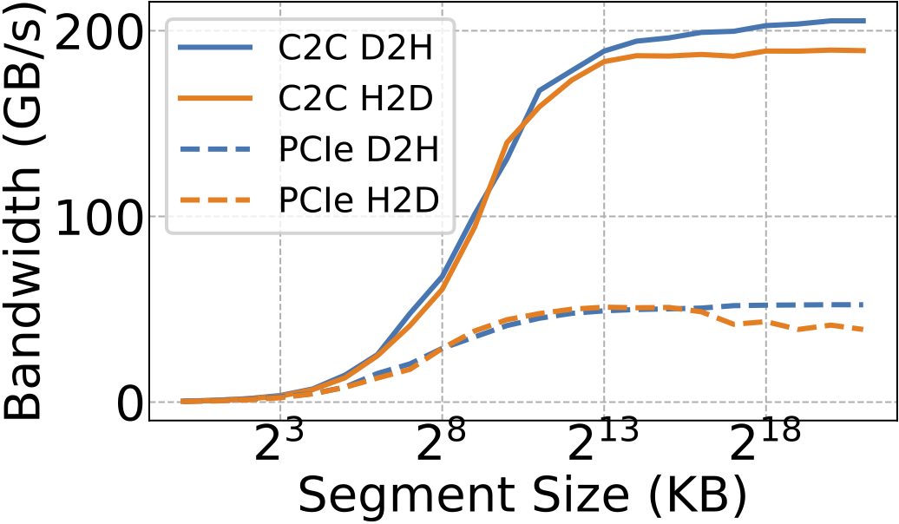
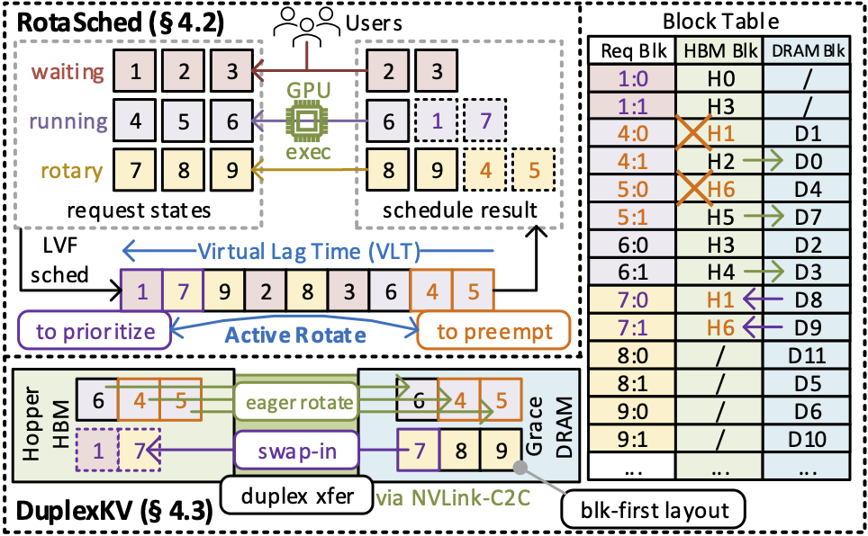
Rotates requests between running (HBM) and a novel transient rotary (DRAM) state by latency urgency — OS-style time-slicing for LLM serving.
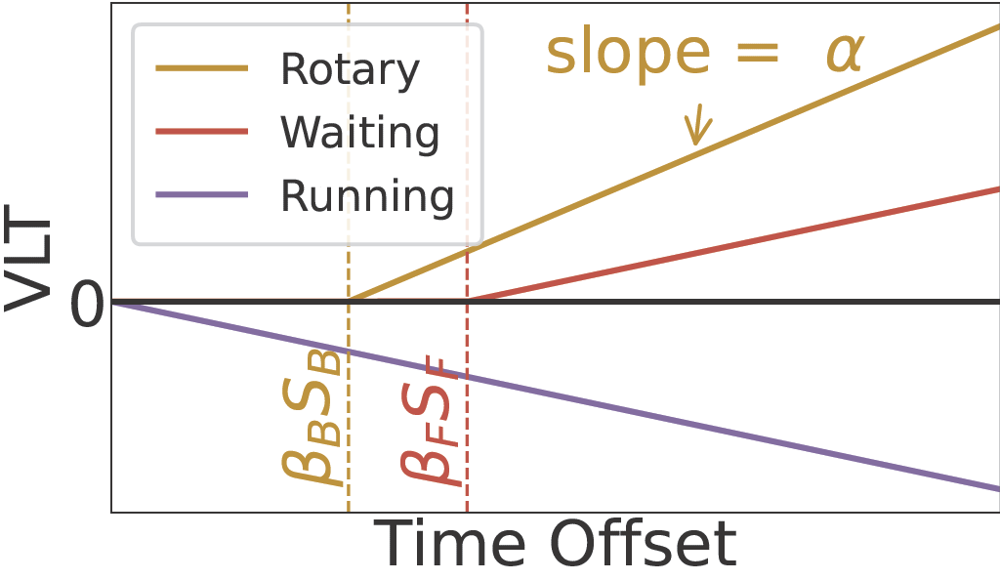
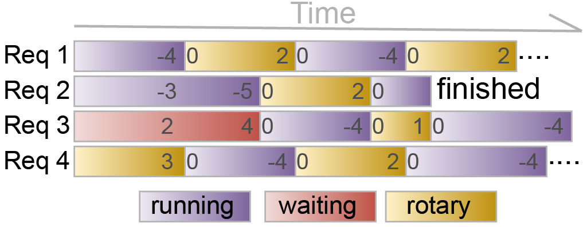
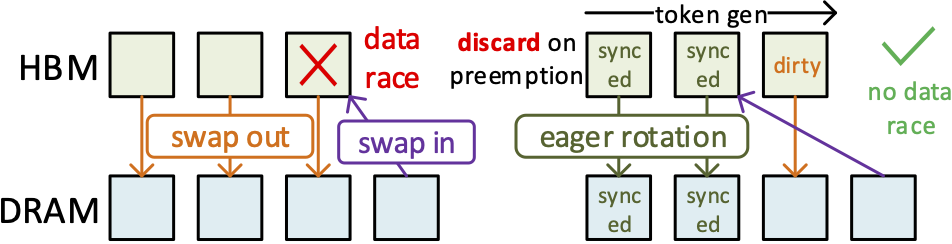
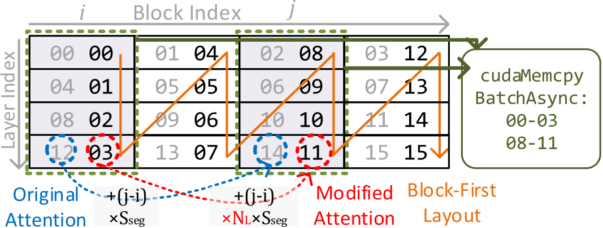
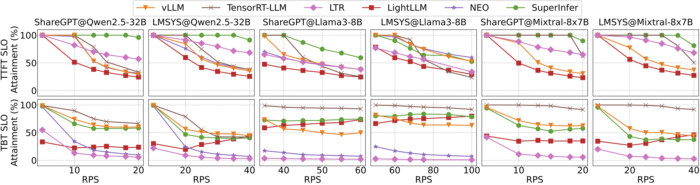
The system was evaluated on a GH200 Superchip (144GB HBM, 480GB DRAM) using models like LLaMA-3-8B, Qwen2.5-32B, and Mixtral-8x7B against baselines such as vLLM, TensorRT-LLM, LightLLM, LTR, and NEO.
@misc{yu2026superinfer,
title={SuperInfer: SLO-Aware Rotary Scheduling and Memory Management for LLM Inference on Superchips},
author={Jiahuan Yu and Mingtao Hu and Zichao Lin and Minjia Zhang},
year={2026},
eprint={2601.20309},
archivePrefix={arXiv},
primaryClass={cs.LG},
url={https://arxiv.org/abs/2601.20309},
}